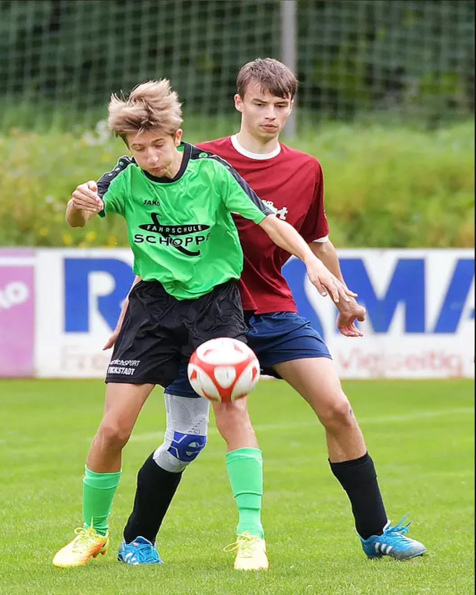
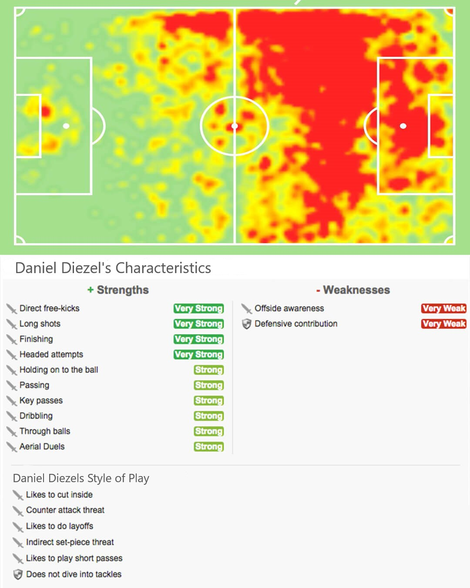

Daniel Diezel
I see football like building muscle –
train hard, learn much, and invest everything you have
and you can be one of the best on the pitch.
I see football like building muscle –
train hard, learn much, and invest everything you have
and you can be one of the best on the pitch.


Diezel switched to Aschaffenburg's powerhouse TuS Leider in 2013. He was an instant sensation and soon came to be regarded as one of the best forwards in the game. After helping TuS Leider to a City Championship title in May 2019, he was repeatedly set back by injuries – but always fought his way back.


Diezel joined SV Stockstadt in 2005 as his first club. He won several youth tournaments and led his team to the championship in 2008 with an outstanding goal difference of 48:0. With further league titles in subsequent years he was called up to higher youth teams. As a striker he always knew where the goal was. His time at Stockstadt ended in 2013 when the team disbanded.

 SV Stockstadt
SV Stockstadt
 TuS A'burg Leider
TuS A'burg Leider
Diezel is a striker who possesses a wide variety of finishes and scores goals of a similarly wide variety. His technique generates significant power without sacrificing accuracy, all while superbly retaining his balance. He mostly favours shooting with the inside of his foot and targeting the corners of the goal, but can also drive his foot through the ball with such speed that goalkeepers struggle to react. Minimal backlift means power even under pressure. His positioning is a further, significant strength – he is constantly on the move, shapes his body well in response to the ball's position, and can shoot early in attacks often with his first touch.
